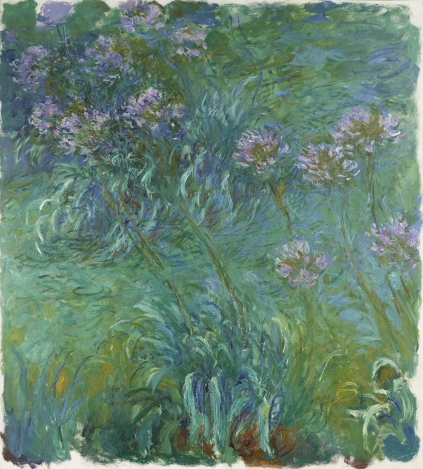
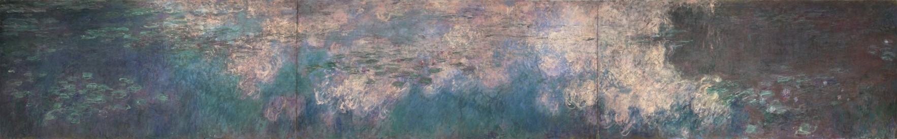
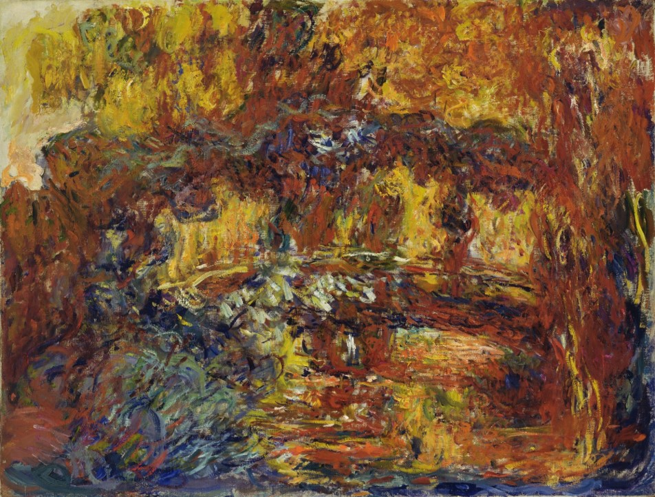
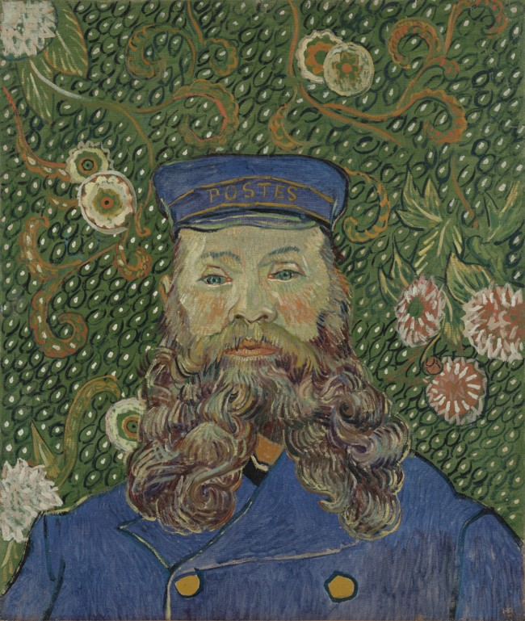
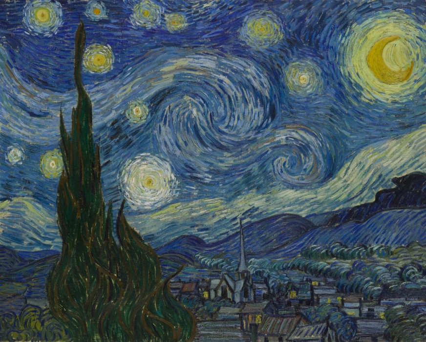
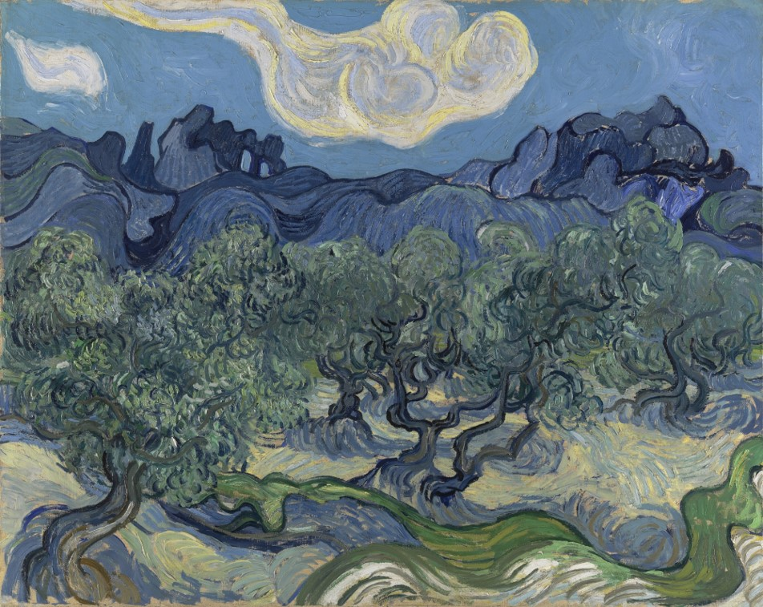
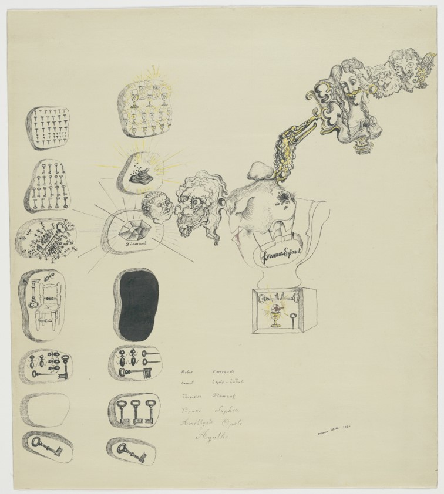
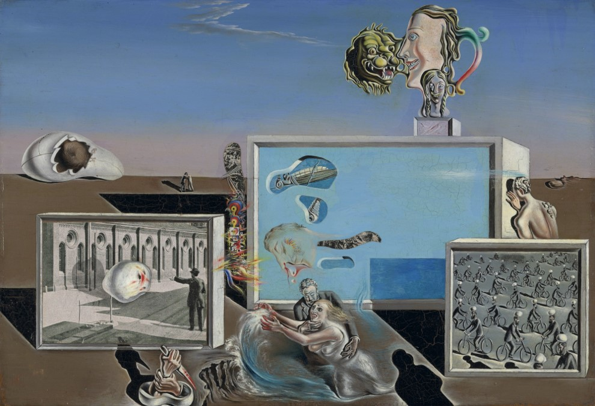
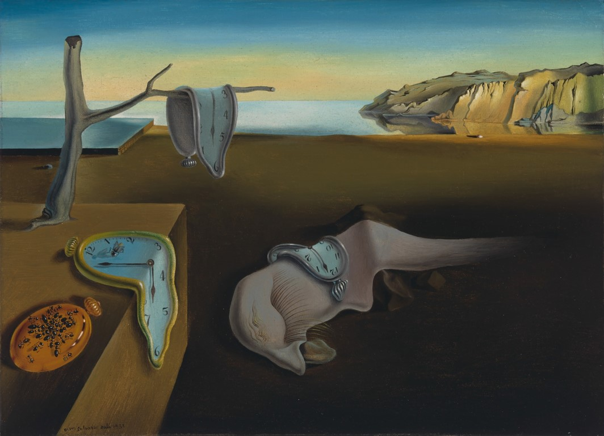

Museum of Modern Art
Claude Monet

Agapanthus

Water Lillies

The Japanese Footbridge
Vincent Van Gogh

Portrait of Joseph Roulin

The Starry Night

The Olive Trees
Salvador Dali

Frontispiece for Second Surrealist Manifesto

Illuminated Pleasures

The Persistence of Memory
More Info